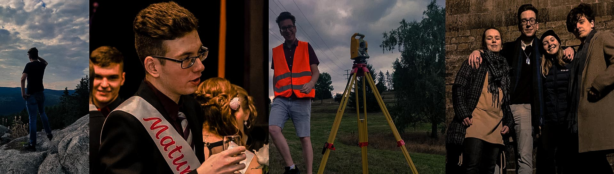
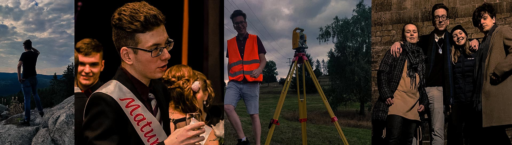

About me
Hello! Good day!
Welcome to my personal website. I'm just another college student trying to enjoy my life to the fullest.
I enjoy spending time with friends and learning new things. I have a great love for animals and I have the best Staffordshire Bull Terrier at home.
Education
Additional Information
Date and Place of Birth : February 10, 2001, Hradec KraloveSkills : English (C1), operation of surveying instruments, AutoCad, Kokeš, Groma, Python (basic), MATLAB, ArcGIS (basic),
Hobbies : Creative writing, reading, video and photo editing, traveling, enjoying beer
Height : 197 cm
Weight : approximately 85 kg
Favorite color : Burgundy
Favorite movies : Fight Club, Trainspotting, True Romance
Favorite books : The Witcher series, Underground
Favorite music : Green Day, My Chemical Romance